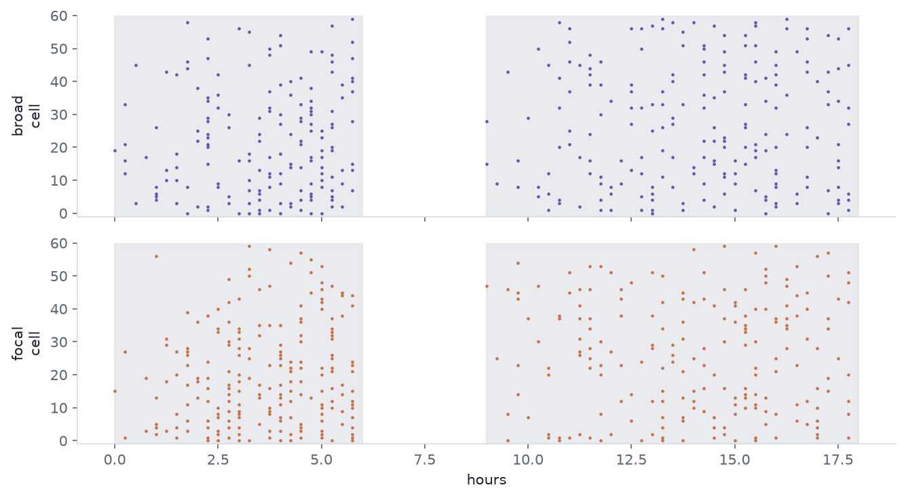
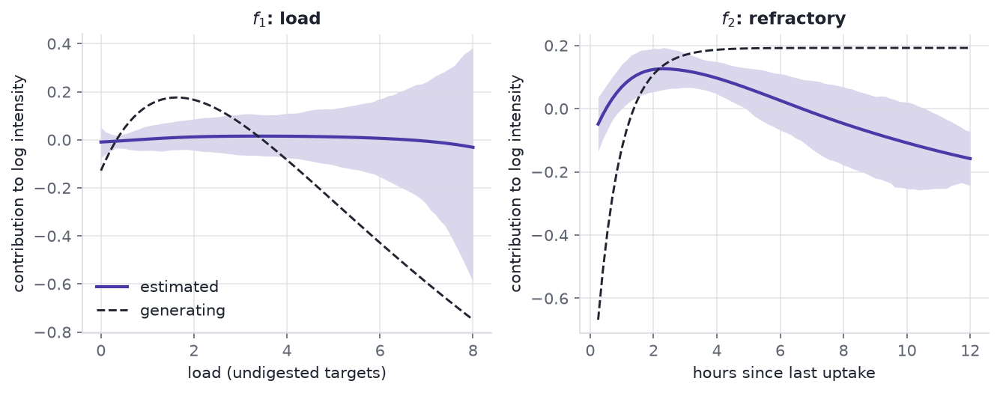
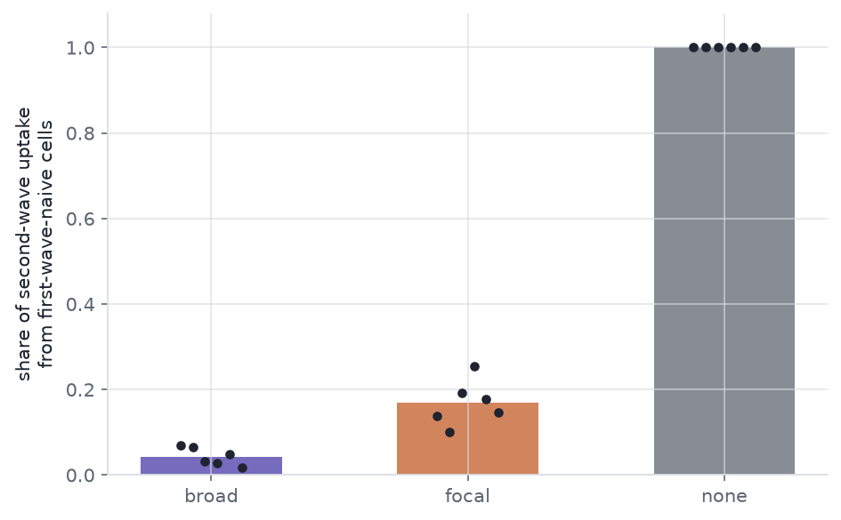

A population uptake curve does not say which macrophages did the work, and an assigned two-wave design does.
Two mechanisms that give the same mean clearance curve, a history-dependent recurrent-event model that separates them, and the design that makes the contrast causal rather than merely predictive.
Statistics
Bayesian
Immunology
Simulation
Author
Ravi Kalia
Published
September 17, 2026
Who Does the Clearing?
A macrophage population clears apoptotic cells at some rate, and that rate is usually all an assay reports. The number is a sum over cells, and a sum has no memory of which cells produced it.
Watch a clearance assay for long enough and the same total uptake can arrive two ways. Experienced macrophages can take on more, so clearance concentrates in the cells that have already eaten. Or experienced macrophages can slow down while fresh cells absorb what they leave, so clearance spreads out. Both trajectories are consistent with continual efferocytosis as it is described, and both give the same population curve. Separating them needs a model of the per-cell event history and a design that assigns the history rather than observing it.
Everything here is simulated. No experimental data were used, and no result below is a claim about a real macrophage population — the point is what an analysis can and cannot recover when the generating process is known exactly.
1 Efferocytosis
Efferocytosis is the recognition, engulfment and disposal of an apoptotic cell by a phagocyte (Doran et al. 2020). It runs in stages that are worth keeping separate:
Find-me. Nucleotides and lipids released by the dying cell recruit the phagocyte (Ravichandran 2011).
Eat-me. Exposed phosphatidylserine, read directly or through a bridging molecule, marks the target for engulfment (Poon et al. 2014).
Internalisation. The target is drawn into a phagosome.
Processing. The phagolysosome degrades the cargo, and the phagocyte metabolises what it recovers.
These are not a strict queue. A macrophage can bind one target while still digesting another, so binding, internalisation and processing overlap in time.
Macrophages clear targets repeatedly rather than once, and what happens after the first meal is the part that matters here. Processing the first corpse changes the cell: mitochondrial fission supports continued uptake (Wang et al. 2017), arginine recovered from the cargo is metabolised into polyamines that promote further uptake (Yurdagul et al. 2020), and loss of the phagocyte’s UCP2 protein blocks continued clearance specifically (Park et al. 2011). Against that, a cell carrying undigested cargo has finite capacity.
So a cell’s own history could push its next uptake either way. Prior uptake could prime it, or saturate it. Both are described in the literature, and an assay that reports a population mean cannot tell which one is running.
Neighbours matter too, in two different ways that are easy to conflate. A neighbour that eats a target removes that target, which lowers the opportunity in the local neighbourhood. Separately, metabolites released by apoptotic cells act on surrounding tissue as signals in their own right (Medina et al. 2020). The first is depletion; the second is signalling; they are distinguishable only if opportunity is measured.
2 Same mean, different mechanism
When targets are limited, the population curve is set by supply, and the allocation underneath it is free.
Two rules draw on one fixed pool of targets. Under priming, cells with prior experience take a larger share; under satiety they take a smaller one and the naive cells absorb the remainder. The pool is what runs out, so both rules eat through the same supply on the same schedule.
Figure 1: Simulated supply-limited clearance of 900 targets by 200 cells under two allocation rules. Left: cumulative population uptake through time under priming and under satiety plus redistribution. Right: the share of all uptake taken by the 35% of cells designated as experienced, under each rule.
final totals differ by 0 targets
experienced-cell share: priming 0.602, satiety 0.144
The two population curves are identical, not merely close: the pool empties on a fixed schedule, so the allocation rule cannot change the total. That is the construction, not a finding — it is what lets the figure vary the mechanism with the population curve held exactly still. The share of the work done by experienced cells is 0.60 against 0.14 — a factor of 4.2. The mean is the same; the mechanism is not.
3 A recurrent-event intensity
Uptake by one cell is a recurrent event, so the object to model is an intensity: the instantaneous rate of the next uptake given everything that has happened to that cell so far (Andersen and Gill 1982, Cook and Lawless 2007).
\(\ell_i(t)\) — current load, targets internalised but not yet processed. This is where priming and satiety compete, so \(f_1\) is the curve of interest.
\(g_i(t)\) — time since the last uptake. \(f_2\) is a refractory term: a cell that has just engulfed something is briefly occupied.
\(n_i(t)\) — neighbour load. \(f_3\) is appetite changed by neighbours through signalling, over and above their effect on supply.
\(u_{d(i)}\), \(w_{j(i)}\) — donor and well random effects. Donors differ, and so do wells within a donor.
\(o_i(t)\) — opportunity: the number of unconsumed targets within reach of cell \(i\).
The opportunity term enters as an offset with coefficient fixed at one, not as a fitted covariate. This is the load-bearing choice. A cell in a depleted neighbourhood eats little because there is nothing to eat, and without the offset that cell’s low count is read as low appetite. Low uptake is not low appetite; the offset is what keeps the two apart, and it is also what makes depletion and neighbour signalling separately identifiable.
4 A simulated two-wave experiment
The design delivers the same first-wave target budget two ways, then gives every arm the same second wave.
broad — the first-wave targets are scattered across the well.
focal — the same number of targets, packed around a subset of cells fixed in advance.
none — no first wave, as a reference for what an inexperienced population does.
After the first wave there is a wash, a three-hour interval, and a second wave common to every arm. 6 donors each contribute one well to each arm: 18 wells and 1440 cells in total. Cells are lost from tracking at a constant hazard, and 12.8% of them are censored before the end.
The generating process gives \(f_1\) a rise then a fall — priming at low load, satiety at high — and \(f_2\) a refractory dip that decays with a time constant of 0.75 h. Digestion clears a target in 4 h, which is slow relative to the interval between waves; that is what carries first-wave history into the second wave rather than letting it wash out. Neighbour effects are generated twice: once by depletion alone, where \(f_3\) is flat at zero and neighbours act only through the offset, and once by depletion plus signalling.
Code
fig, axes = plt.subplots(2, 1, figsize=(9, 5.0), sharex=True)panel = exp.panelfor ax, arm inzip(axes, ("broad", "focal")): sub = panel[(panel["arm"] == arm) & (panel["donor"] ==0)] order = ( cells[(cells["arm"] == arm) & (cells["donor"] ==0)] .sort_values("wave1_uptake", ascending=False)["uid"].to_numpy()[:60] ) rank = {u: r for r, u inenumerate(order)} ev = sub[(sub["y"] >0) & (sub["uid"].isin(rank))] ax.axvspan(sim.WAVE1[0] * sim.DT, sim.WAVE1[1] * sim.DT, color=house.RULE, alpha=0.55) ax.axvspan(sim.WAVE2[0] * sim.DT, sim.WAVE2[1] * sim.DT, color=house.RULE, alpha=0.55) ax.scatter( ev["bin"] * sim.DT, [rank[u] for u in ev["uid"]], s=5, color=house.ARM_COLOUR[arm], alpha=0.85, linewidths=0, ) ax.set_ylabel(f"{arm}\ncell") ax.set_ylim(-1, 60) ax.grid(False)axes[1].set_xlabel("hours")fig.tight_layout()plt.show()print(mean_w1.round(2).to_string())print(mean_w2.round(2).to_string())

Figure 2: Simulated uptake events for 60 cells drawn from one donor, in the broad and focal arms. Each row is one cell, each mark one uptake. The shaded bands are the two target waves; the gap between them is the wash and interval. Cells are ordered by first-wave uptake.
arm
broad 2.79
focal 3.21
none 0.00
arm
broad 3.49
focal 3.45
none 3.51
Mean first-wave uptake is 2.79 per cell in broad and 3.21 in focal, from the same delivered budget. Mean second-wave uptake is 3.49 against 3.45 — a difference of 1.1%. The population readout is nearly blind to the manipulation, which is the point of running it.
5 Fitting
The model is fitted on the second wave, with first-wave history carried in as covariates. The counting-process likelihood factorises into independent contributions on any partition of follow-up, so the events are aggregated to 1.5-hour blocks — about twice the refractory time constant, chosen on that scale rather than by looking at the fit. That gives 7,805 rows.
Two models, fixed before either was run:
Baseline — negative-binomial, linear in load, gap and \(\log(1 + \text{neighbour
load})\), with the same offset.
Main model — the same likelihood with \(f_1\), \(f_2\) and \(f_3\) as penalised cubic B-splines. The penalty is a second-order random walk on the basis coefficients, which is the P-spline prior (Wood 2017), written non-centred so the sampler sees unit-scale parameters. Fitted in PyMC (Abril-Pla et al. 2023), with donor and well random effects.
The two are fitted by different machinery, and that matters for what the comparison means. The smooths and their credible bands come from the Bayesian fit, random effects included. The model comparison in the next section refits both models by maximum likelihood without random effects, because full leave-one-donor-out on two Bayesian models was out of compute budget. The approximation is the same on both sides, so the comparison is fair, but it is not a comparison of the two models exactly as specified here.
Code
import nutpiet0 = time.perf_counter()weights = np.ones(len(fit_panel))compiled = nutpie.compile_pymc_model(fitting.gam_model(design, weights))# `cores` is pinned, not left to the machine. nutpie is bit-reproducible for a# fixed seed only when the chain-to-core allocation is also fixed; leaving it to# whatever the host has free moves the posterior summaries in the last digit.trace = nutpie.sample( compiled, chains=2, cores=2, draws=300, tune=300, seed=20260917, progress_bar=False,)t0 = lap("sample", t0)
Code
fig, (ax1, ax2) = plt.subplots(1, 2, figsize=(9, 3.6))for ax, grid, draws, truth, xlab, title in ( (ax1, grid_load, d_load, true_load, "load (undigested targets)", "$f_1$: load"), (ax2, grid_gap, d_gap, true_gap, "hours since last uptake", "$f_2$: refractory"),): lo, hi = np.quantile(draws, [0.025, 0.975], axis=0) ax.fill_between(grid, lo, hi, color=house.ACCENT, alpha=0.20, linewidth=0) ax.plot(grid, draws.mean(0), color=house.ACCENT, lw=2.0, label="estimated") ax.plot(grid, truth, color=house.INK, lw=1.4, ls="--", label="generating") ax.set_xlabel(xlab) ax.set_ylabel("contribution to log intensity") ax.set_title(title)ax1.legend(loc="lower left")fig.tight_layout()plt.show()print(f"f1 RMSE {rmse_load:.3f}, 95% band covers {cover_load:.0%} of the grid")print(f"f2 RMSE {rmse_gap:.3f}")print(f"estimated f1 peak at load {peak_est:.2f}; generating peak at {peak_true:.2f}")

Figure 3: Estimated against generating smooths from the simulated depletion-only experiment, on the log-intensity scale. Left: the load term, rising at low load and falling at high load. Right: the refractory term against time since the last uptake. Bands are 95% credible intervals; both curves are centred over the fitted rows.
f1 RMSE 0.339, 95% band covers 18% of the grid
f2 RMSE 0.233
estimated f1 peak at load 3.34; generating peak at 1.62
The load term recovers its sign pattern and not much more. The estimate rises then falls, as the generating curve does, so the qualitative claim that priming gives way to satiety survives. The quantitative recovery is poor: the estimated peak sits at load 3.3 against a generating peak at 1.6, root-mean-square error is 0.339 on the log-intensity scale, and the 95% credible band covers the true curve over only 18% of the grid.
That last number is the honest headline. A band that excludes the truth over 82% of the range is under-covering, so the intervals here are too narrow to be taken at face value. The random-walk penalty is doing more shrinking than the data warrant, and the 1.5-hour aggregation blurs the covariate within each block. The refractory term is better behaved, at root-mean-square error 0.233. Only 1.6% of rows carry a load above 4, which is where the band is widest and the estimate worst.
The estimated dispersion is effectively Poisson: with the opportunity offset in place, there is no extra-Poisson variation left for the negative binomial to absorb. That estimate comes from a fixed-effect Poisson fit on the same design, not from the Bayesian model’s own dispersion posterior. The negative binomial nests the Poisson, so this costs nothing, but it is worth saying rather than reporting a dispersion that is doing no work.
6 Out-of-donor evaluation
The margin was fixed before any model was fitted: keep the spline model only if it beats the baseline by more than 4 log points and by more than twice the standard error of the difference. Both conditions, not either.
Code
t0 = time.perf_counter()folds = fitting.lodo_glm(fit_panel, design, alpha_hat)score = fitting.score_summary(folds)calib = fitting.calibration_table(fit_panel, design, alpha_hat)t0 = lap("evaluation", t0)kept = (score["diff"] >4) and (score["diff"] >2* score["se"])print(f"spline {score['gam']:9.1f}")print(f"linear {score['linear']:9.1f}")print(f"diff {score['diff']:9.2f}")print(f" se {score['se']:9.2f} (across {score['n_donors']} donors, the resampling unit)")print(f" se_row {score['se_row']:9.2f} (across {score['n']} rows, which are not independent)")print(f"margin met: {kept}")
spline -7818.0
linear -7827.3
diff 9.30
se 3.63 (across 6 donors, the resampling unit)
se_row 5.78 (across 7805 rows, which are not independent)
margin met: True
Each donor is held out in turn, both models are refitted by maximum likelihood on the remaining donors, and the held-out donor’s counts are scored. These are plug-in log scores at the fitted coefficients, not expected log predictive densities (Vehtari et al. 2017): they ignore coefficient uncertainty, carry no random effects, and predict the held-out donor at the average donor. The approximation is identical for both models, so the comparison is fair, but neither number is an ELPD. The scoring rule is the log score, which is strictly proper (Gneiting and Raftery 2007). Both fits carry a small ridge on the non-intercept columns, because an unpenalised spline GLM extrapolates without limit on a fold whose training donors do not span the knot range. The standard error is taken across donors, the unit that is actually resampled; the row-wise figure is printed beside it and is the larger of the two here.
The spline model scores 9.3 log points above the baseline with a standard error of 3.6, so it meets the pre-registered margin. Recovering the shape of \(f_1\) and predicting a new donor better are different achievements, and on this simulation both hold.
Figure 4: Held-out donor calibration for both models on the simulated experiment. Points are bins of predicted rate; the vertical extent is one standard error of the observed mean. The diagonal is perfect calibration.
7 Prediction and causation
Within an arm, a cell’s load is observed, not assigned. Cells that are intrinsically avid eat more in the first wave and more in the second, so the observed relationship between history and later uptake is confounded by that avidity — which no instrument measures.
Latent avidity correlates 0.41 with first-wave uptake and 0.43 with second-wave uptake. Regressing later uptake on observed history gives a slope of 0.0941; holding the latent term fixed — which the simulation can do and an experiment cannot — gives 0.0663. The observed-load curve is biased by 42%.
The assigned arm is different. Arm is randomised across donors, so the broad-versus-focal contrast is a causal contrast of delivery patterns whatever avidity does (Hernan and Robins 2020). The quantity it moves is not the mean.
Code
fig, ax = plt.subplots(figsize=(6.4, 4.0))order = ["broad", "focal", "none"]means = [float(share_by_arm[a]) for a in order]ax.bar(order, means, color=[house.ARM_COLOUR[a] for a in order], width=0.55, alpha=0.75)for i, arm inenumerate(order): pts = ns[ns["arm"] == arm]["share"].to_numpy() ax.scatter( np.full(pts.size, i) + np.linspace(-0.12, 0.12, pts.size), pts, s=26, color=house.INK, zorder=3, linewidths=0, )ax.set_ylabel("share of second-wave uptake\nfrom first-wave-naive cells")ax.set_ylim(0, 1.08)fig.tight_layout()plt.show()print(share_by_arm.round(3).to_string())print(f"logit contrast focal - broad = {contrast_logit:.2f} 95% CI [{ci[0]:.2f}, {ci[1]:.2f}]")

Figure 5: Share of second-wave uptake taken by cells that ate nothing in the first wave, by assigned arm, across the simulated donors. Points are donors; bars are the donor mean. The no-first-wave arm is at one by construction and is shown for scale.
arm
broad 0.043
focal 0.169
none 1.000
logit contrast focal - broad = 1.58 95% CI [0.98, 2.18]
Naive cells supply 4.3% of second-wave uptake in broad and 16.9% in focal, from the same delivered budget and with second-wave means that differ by under two percent. The logit contrast is 1.58 (95% CI 0.98 to 2.18, donor bootstrap).
One caution about that readout. A share is a composition, and a composition moves when any part moves (Gloor et al. 2017). The naive-cell share can rise because naive cells ate more or because experienced cells ate less, and those are different mechanisms. Relative abundance is not flux: the share needs the total beside it, which is why the second-wave totals are reported above.
8 Design
What a design has to record, if this model is to be fitted at all:
Per-cell event times, not endpoint counts. The intensity is defined on the history.
Two distinguishable waves. Separate labels are what make a second-wave event attributable and make “naive” a measurable category.
Targets within reach. The opportunity offset is not optional, and it cannot be reconstructed after the fact.
Viability and tracking loss. A cell that stops being tracked is censored, not a cell that stopped eating.
Assigned delivery. Observed history is confounded; assigned delivery is not.
Figure 6: Simulated probability of detecting the assigned broad-versus-focal contrast in the naive-cell share, against the number of donors. Each point is 200 simulated experiments tested with a donor-paired t-test on the logit share at the 5% level.
6 donors reach 80% power for this contrast at this effect size. That is a statement about the naive-cell share; the same experiment is badly underpowered for the population mean, which the design deliberately holds still. The test used here is a donor-paired comparison, which is cheaper than the fitted intensity model and therefore conservative.
9 Constraints
The generating process is mine. The smooths, the digestion time and the neighbour radius were chosen to make the identification problem visible, not measured from an assay. Recovering \(f_1\) here says the estimator works when the model is true; it says nothing about how it behaves under a mechanism nobody wrote down. This is modelling opinion, not an empirical finding.
The evaluation is a plug-in score, not an ELPD, and not of the fitted models. Full leave-one-donor-out with both Bayesian models was out of compute budget, so the fold comparison refits by maximum likelihood with no random effects. Coefficient uncertainty is ignored and the held-out donor is predicted at the average donor. The smooths shown above come from the Bayesian fit; the score below does not.
The score is sensitive to the aggregation grid. The 1.5 h block was chosen against the refractory time constant, before looking at the fit; a coarser grid narrows the gap between the two models substantially. A comparison that moves with a nuisance choice should be reported with that choice, not without it.
Six donors is a small random-effect sample. The donor standard deviation is estimated from six values, and its posterior is correspondingly wide.
The credible bands under-cover. The 95% band for \(f_1\) contains the generating curve over 18% of its range. Reported rather than tuned away: a penalty prior and an aggregation grid both chosen before fitting should not be adjusted until the intervals look right. The shape conclusion stands; the interval widths do not.
The penalty shrinks more than a P-spline should. The random walk is written tau * cumsum(cumsum(z)), which puts the constant and linear components of each smooth under the same tau as the curvature. A standard P-spline leaves that two-dimensional null space unpenalised. The result is asymmetric in the basis index — the first coefficient is pinned hardest — which is a specific structural reason the estimated peak sits to the right of the true one, over and above block blurring.
The folds are not fully held out. The dispersion estimate, the spline knots and the covariate standardisation are all computed on the full panel, so a held-out donor contributes to them. It is the same leakage on both sides, so the comparison stays fair, but each absolute score is optimistic.
\(f_3\) is the weakest of the three. Depletion and signalling are separable in principle through the offset, but the two generating modes are not compared head to head here.
Simulated tracking loss is non-informative. Real loss is not: a cell that dies after over-eating is censored precisely because of its history, and that breaks the censoring assumption this model relies on.
One label-free imaging method is cited as an example only (Neto et al. 2022). Nothing here rests on it.
10 Reproducibility
toy 0.0 s
simulate 0.4 s
design 1.2 s
sample 86.8 s
evaluation 0.6 s
power 110.4 s
total 201.2 s
python 3.12.13 numpy 2.5.3 pandas 3.0.5
pymc 6.3.2 nutpie 0.16.11
Every seed is fixed in src/sim.py and at each call site, and the post’s numbers are computed at render time and interpolated into the prose, so a figure and the sentence beside it cannot drift apart.
The simulation, the maximum-likelihood scoring and the power curve are deterministic and reproduce exactly. The posterior summaries need one more thing: nutpie is bit-reproducible for a fixed seed only when the chain-to-core allocation is fixed too, so cores is pinned alongside chains above. Left to the host, the smooth summaries moved in the last reported digit between runs on this machine. To rerun it, build the environment in requirements.txt, register the kernel, and render this document.
Abril-Pla, O., et al. (2023). PyMC: a modern, and comprehensive probabilistic programming framework in Python. PeerJ Computer Science 9: e1516. doi:10.7717/peerj-cs.1516
Andersen, P. K., and Gill, R. D. (1982). Cox’s regression model for counting processes: a large sample study. The Annals of Statistics 10(4). doi:10.1214/aos/1176345976
Cook, R. J., and Lawless, J. F. (2007). The Statistical Analysis of Recurrent Events. Springer. doi:10.1007/978-0-387-69810-6
Doran, A. C., Yurdagul, A., and Tabas, I. (2020). Efferocytosis in health and disease. Nature Reviews Immunology 20(4): 254-267. doi:10.1038/s41577-019-0240-6
Gloor, G. B., Macklaim, J. M., Pawlowsky-Glahn, V., and Egozcue, J. J. (2017). Microbiome datasets are compositional: and this is not optional. Frontiers in Microbiology 8: 2224. doi:10.3389/fmicb.2017.02224
Gneiting, T., and Raftery, A. E. (2007). Strictly proper scoring rules, prediction, and estimation. Journal of the American Statistical Association 102(477): 359-378. doi:10.1198/016214506000001437
Hernan, M. A., and Robins, J. M. (2020). Causal Inference: What If. Chapman and Hall/CRC. miguelhernan.org/whatifbook
Medina, C. B., et al. (2020). Metabolites released from apoptotic cells act as tissue messengers. Nature 580: 130-135. doi:10.1038/s41586-020-2121-3
Neto, N. G. B., O’Rourke, S. A., Zhang, M., Fitzgerald, H. K., Dunne, A., and Monaghan, M. G. (2022). Non-invasive classification of macrophage polarisation by 2P-FLIM and machine learning. eLife 11: e77373. doi:10.7554/eLife.77373
Park, D., et al. (2011). Continued clearance of apoptotic cells critically depends on the phagocyte Ucp2 protein. Nature 477(7363): 220-224. doi:10.1038/nature10340
Poon, I. K. H., Lucas, C. D., Rossi, A. G., and Ravichandran, K. S. (2014). Apoptotic cell clearance: basic biology and therapeutic potential. Nature Reviews Immunology 14(3): 166-180. doi:10.1038/nri3607
Ravichandran, K. S. (2011). Beginnings of a good apoptotic meal: the find-me and eat-me signaling pathways. Immunity 35(4): 445-455. doi:10.1016/j.immuni.2011.09.004
Vehtari, A., Gelman, A., and Gabry, J. (2017). Practical Bayesian model evaluation using leave-one-out cross-validation and WAIC. Statistics and Computing 27(5): 1413-1432. doi:10.1007/s11222-016-9696-4
Wang, Y., et al. (2017). Mitochondrial fission promotes the continued clearance of apoptotic cells by macrophages. Cell 171(2): 331-345.e22. doi:10.1016/j.cell.2017.08.041
Wood, S. N. (2017). Generalized Additive Models: An Introduction with R, 2nd edition. Chapman and Hall/CRC. doi:10.1201/9781315370279
Yurdagul, A., et al. (2020). Macrophage metabolism of apoptotic cell-derived arginine promotes continual efferocytosis and resolution of injury. Cell Metabolism 31(3): 518-533.e10. doi:10.1016/j.cmet.2020.01.001